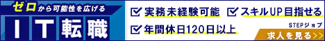

IT転職バナー
仮想

GDN・YDA用
- 概要
- IT転職支援企業「STEPジョブ」の求人広告バナー
- ターゲット
- 20~30代の男性。会社員・転職活動をしている人・フリーター
- 使用フォント
- 「HGS創英角ｺﾞｼｯｸUB 標準」・・・IT業界は堅く信頼性を重視するイメージがあるため、ゴシック体を使用し、誠実さや安定感を表現しました
- 情報設計・デザイン
- ・未経験からのスタートをイメージできるよう、「ゼロ」というキーワードを用いて、誰でも挑戦できる印象を与えました
・全体的に青を基調とした配色にすることで、IT業界にふさわしい誠実さと信頼感を表現しました
・強調したい部分には青の反対色である黄色を使用したり、下線を引くことで視線を誘導しています
・「会員登録して求人を見る」のボタンにはオレンジを採用し、前向きで明るい印象を与えることで、求人登録を促すデザインにしました
・「IT・WEBエンジニア求人多数」や「会員登録して求人を見る」の文字に影を加えることで、立体感と存在感を強調しています - 制作日・期間
- 2025年10月15日 5時間
- 使用ツール
- Photoshop